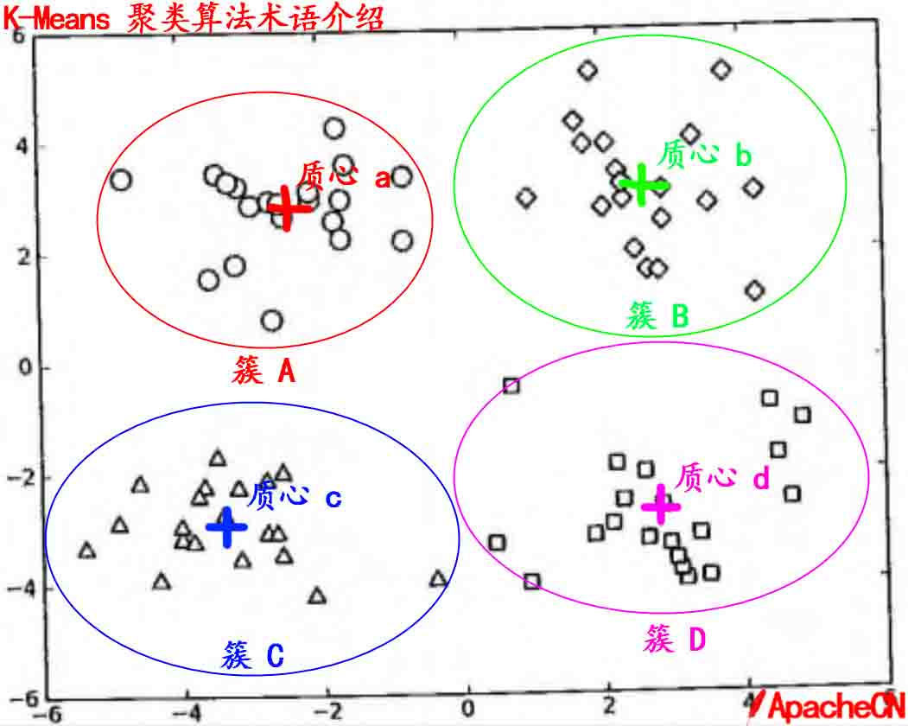
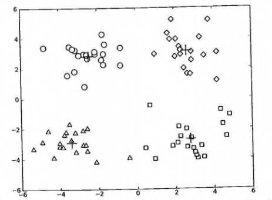
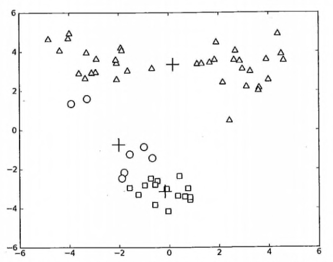

第 10 章 K-Means（K-均值）聚类算法¶
K-Means 算法¶
聚类是一种无监督的学习, 它将相似的对象归到一个簇中, 将不相似对象归到不同簇中.
相似这一概念取决于所选择的相似度计算方法.
K-Means 是发现给定数据集的 K 个簇的聚类算法, 之所以称之为 K-均值 是因为它可以发现 K 个不同的簇, 且每个簇的中心采用簇中所含值的均值计算而成.
簇个数 K 是用户指定的, 每一个簇通过其质心（centroid）, 即簇中所有点的中心来描述.
聚类与分类算法的最大区别在于, 分类的目标类别已知, 而聚类的目标类别是未知的.
优点: 容易实现 缺点:可能收敛到局部最小值, 在大规模数据集上收敛较慢 使用数据类型 : 数值型数据
K-Means 场景¶
主要用来聚类, 但是类别是未知的.
例如: 对地图上的点进行聚类.
K-Means 术语¶
- 簇: 所有数据点点集合，簇中的对象是相似的。
- 质心: 簇中所有点的中心（计算所有点的均值而来）.
- SSE: Sum of Sqared Error（平方误差和）, SSE 值越小，表示越接近它们的质心. 由于对误差取了平方，因此更加注重那么远离中心的点.
有关 簇 和 质心 术语更形象的介绍, 请参考下图:

K-Means 工作流程¶
- 首先, 随机确定 K 个初始点作为质心（不是数据中的点）.
- 然后将数据集中的每个点分配到一个簇中, 具体来讲, 就是为每个点找到距其最近的质心, 并将其分配该质心所对应的簇. 这一步完成之后, 每个簇的质心更新为该簇所有点的平均值.
上述过程的 伪代码 如下:
- 创建 k 个点作为起始质心（通常是随机选择）
- 当任意一个点的簇分配结果发生改变时
- 对数据集中的每个数据点
- 对每个质心
- 计算质心与数据点之间的距离
- 将数据点分配到距其最近的簇
- 对每个质心
- 对每一个簇, 计算簇中所有点的均值并将均值作为质心
- 对数据集中的每个数据点
K-Means 开发流程¶
收集数据：使用任意方法 准备数据：需要数值型数据类计算距离, 也可以将标称型数据映射为二值型数据再用于距离计算 分析数据：使用任意方法 训练算法：此步骤不适用于 K-Means 算法 测试算法：应用聚类算法、观察结果.可以使用量化的误差指标如误差平方和（后面会介绍）来评价算法的结果. 使用算法：可以用于所希望的任何应用.通常情况下, 簇质心可以代表整个簇的数据来做出决策.
K-Means 聚类算法函数¶
从文件加载数据集¶
# 从文本中构建矩阵，加载文本文件，然后处理 def loadDataSet(fileName): # 通用函数，用来解析以 tab 键分隔的 floats（浮点数），例如: 1.658985 4.285136 dataMat = [] fr = open(fileName) for line in fr.readlines(): curLine = line.strip().split('\t') fltLine = map(float,curLine) # 映射所有的元素为 float（浮点数）类型 dataMat.append(fltLine) return dataMat
计算两个向量的欧氏距离¶
# 计算两个向量的欧式距离（可根据场景选择） def distEclud(vecA, vecB): return sqrt(sum(power(vecA - vecB, 2))) # la.norm(vecA-vecB)
构建一个包含 K 个随机质心的集合¶
# 为给定数据集构建一个包含 k 个随机质心的集合。随机质心必须要在整个数据集的边界之内，这可以通过找到数据集每一维的最小和最大值来完成。然后生成 0~1.0 之间的随机数并通过取值范围和最小值，以便确保随机点在数据的边界之内。 def randCent(dataSet, k): n = shape(dataSet)[1] # 列的数量 centroids = mat(zeros((k,n))) # 创建k个质心矩阵 for j in range(n): # 创建随机簇质心，并且在每一维的边界内 minJ = min(dataSet[:,j]) # 最小值 rangeJ = float(max(dataSet[:,j]) - minJ) # 范围 = 最大值 - 最小值 centroids[:,j] = mat(minJ + rangeJ * random.rand(k,1)) # 随机生成 return centroids
K-Means 聚类算法¶
# k-means 聚类算法 # 该算法会创建k个质心，然后将每个点分配到最近的质心，再重新计算质心。 # 这个过程重复数次，直到数据点的簇分配结果不再改变位置。 # 运行结果（多次运行结果可能会不一样，可以试试，原因为随机质心的影响，但总的结果是对的， 因为数据足够相似，也可能会陷入局部最小值） def kMeans(dataSet, k, distMeas=distEclud, createCent=randCent): m = shape(dataSet)[0] # 行数 clusterAssment = mat(zeros((m, 2))) # 创建一个与 dataSet 行数一样，但是有两列的矩阵，用来保存簇分配结果 centroids = createCent(dataSet, k) # 创建质心，随机k个质心 clusterChanged = True while clusterChanged: clusterChanged = False for i in range(m): # 循环每一个数据点并分配到最近的质心中去 minDist = inf; minIndex = -1 for j in range(k): distJI = distMeas(centroids[j,:],dataSet[i,:]) # 计算数据点到质心的距离 if distJI < minDist: # 如果距离比 minDist（最小距离）还小，更新 minDist（最小距离）和最小质心的 index（索引） minDist = distJI; minIndex = j if clusterAssment[i, 0] != minIndex: # 簇分配结果改变 clusterChanged = True # 簇改变 clusterAssment[i, :] = minIndex,minDist**2 # 更新簇分配结果为最小质心的 index（索引），minDist（最小距离）的平方 print centroids for cent in range(k): # 更新质心 ptsInClust = dataSet[nonzero(clusterAssment[:, 0].A==cent)[0]] # 获取该簇中的所有点 centroids[cent,:] = mean(ptsInClust, axis=0) # 将质心修改为簇中所有点的平均值，mean 就是求平均值的 return centroids, clusterAssment
测试函数¶
- 测试一下以上的基础函数是否可以如预期运行, 请看: https://github.com/apachecn/MachineLearning/blob/master/src/python/10.kmeans/kMeans.py
- 测试一下 kMeans 函数是否可以如预期运行, 请看: https://github.com/apachecn/MachineLearning/blob/master/src/python/10.kmeans/kMeans.py
参考运行结果如下:

在 kMeans 的函数测试中，可能偶尔会陷入局部最小值（局部最优的结果，但不是全局最优的结果）.
K-Means 聚类算法的缺陷¶
在 kMeans 的函数测试中，可能偶尔会陷入局部最小值（局部最优的结果，但不是全局最优的结果）.
局部最小值的的情况如下:

所以为了克服 KMeans 算法收敛于局部最小值的问题，有更厉害的大佬提出了另一个称之为二分K-均值（bisecting K-Means）的算法.
二分 K-Means 聚类算法¶
该算法首先将所有点作为一个簇，然后将该簇一分为二。
之后选择其中一个簇继续进行划分，选择哪一个簇进行划分取决于对其划分时候可以最大程度降低 SSE（平方和误差）的值。
上述基于 SSE 的划分过程不断重复，直到得到用户指定的簇数目为止。
二分 K-Means 聚类算法伪代码¶
- 将所有点看成一个簇
- 当簇数目小雨 k 时
- 对于每一个簇
- 计算总误差
- 在给定的簇上面进行 KMeans 聚类（k=2）
- 计算将该簇一分为二之后的总误差
- 选择使得误差最小的那个簇进行划分操作
另一种做法是选择 SSE 最大的簇进行划分，直到簇数目达到用户指定的数目位置。 接下来主要介绍该做法。
二分 K-Means 聚类算法代码¶
# 二分 KMeans 聚类算法, 基于 kMeans 基础之上的优化，以避免陷入局部最小值 def biKMeans(dataSet, k, distMeas=distEclud): m = shape(dataSet)[0] clusterAssment = mat(zeros((m,2))) # 保存每个数据点的簇分配结果和平方误差 centroid0 = mean(dataSet, axis=0).tolist()[0] # 质心初始化为所有数据点的均值 centList =[centroid0] # 初始化只有 1 个质心的 list for j in range(m): # 计算所有数据点到初始质心的距离平方误差 clusterAssment[j,1] = distMeas(mat(centroid0), dataSet[j,:])**2 while (len(centList) < k): # 当质心数量小于 k 时 lowestSSE = inf for i in range(len(centList)): # 对每一个质心 ptsInCurrCluster = dataSet[nonzero(clusterAssment[:,0].A==i)[0],:] # 获取当前簇 i 下的所有数据点 centroidMat, splitClustAss = kMeans(ptsInCurrCluster, 2, distMeas) # 将当前簇 i 进行二分 kMeans 处理 sseSplit = sum(splitClustAss[:,1]) # 将二分 kMeans 结果中的平方和的距离进行求和 sseNotSplit = sum(clusterAssment[nonzero(clusterAssment[:,0].A!=i)[0],1]) # 将未参与二分 kMeans 分配结果中的平方和的距离进行求和 print "sseSplit, and notSplit: ",sseSplit,sseNotSplit if (sseSplit + sseNotSplit) < lowestSSE: # 总的（未拆分和已拆分）误差和越小，越相似，效果越优化，划分的结果更好（注意：这里的理解很重要，不明白的地方可以和我们一起讨论） bestCentToSplit = i bestNewCents = centroidMat bestClustAss = splitClustAss.copy() lowestSSE = sseSplit + sseNotSplit # 找出最好的簇分配结果 bestClustAss[nonzero(bestClustAss[:,0].A == 1)[0],0] = len(centList) # 调用二分 kMeans 的结果，默认簇是 0,1. 当然也可以改成其它的数字 bestClustAss[nonzero(bestClustAss[:,0].A == 0)[0],0] = bestCentToSplit # 更新为最佳质心 print 'the bestCentToSplit is: ',bestCentToSplit print 'the len of bestClustAss is: ', len(bestClustAss) # 更新质心列表 centList[bestCentToSplit] = bestNewCents[0,:].tolist()[0] # 更新原质心 list 中的第 i 个质心为使用二分 kMeans 后 bestNewCents 的第一个质心 centList.append(bestNewCents[1,:].tolist()[0]) # 添加 bestNewCents 的第二个质心 clusterAssment[nonzero(clusterAssment[:,0].A == bestCentToSplit)[0],:]= bestClustAss # 重新分配最好簇下的数据（质心）以及SSE return mat(centList), clusterAssment
测试二分 KMeans 聚类算法¶
- 测试一下二分 KMeans 聚类算法，请看: https://github.com/apachecn/MachineLearning/blob/master/src/python/10.kmeans/kMeans.py
上述函数可以运行多次，聚类会收敛到全局最小值，而原始的 kMeans() 函数偶尔会陷入局部最小值。
运行参考结果如下:

- 作者：那伊抹微笑
- GitHub地址: https://github.com/apachecn/MachineLearning
- 版权声明：欢迎转载学习 => 请标注信息来源于 ApacheCN